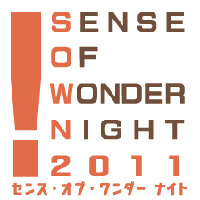

- Organized by
- Computer Entertainment Supplier's Association / Nikkei Business Publications, Inc.
- Cooperation by
- International Game Developers Association Japan Chapter (IDGA Japan)
Screening Committee
Entries will be fairly screened by the Screening Committee.
 |
CyberAgent Mr. Norishige Nagase CA Developers Connect After serving R & D sector in the communication industry, he has chosen the internet industry. he joins CyberAgent in August 2005. Mr. Nagase worked for new business development service of Ameba Blog. He builds up for realization of "Cyber Agent as technology company" as an executive offier of the technical department. |
| GMO Internet Mr. Michimoto Tadakuma GMO Social Apps Initiative Producer Producer, GMO Social Apps Division. Mr. Tadakuma joined GMO Internet in 2004. After sales manager for internet advertising, he was assigned to ”APPLI YAROUZE! project"（joint game development program with GMO）, as a social game development consultant. He performed many great feats,so he was promoted to the producer of ”GMO Social Apps Division" In 2011 |
|
 |
GREE Mr. Shinpei Yashima Group Leader/Contents Director GREE Platform Business Division 3 Marketing and Developer Relations |
| HUDSON SOFT Mr. Masato Shibata Executive Officer Mr. Shibata joins HUDSON as sales and shifts to developers division. He launchs the mobile business and takes in charge of the planning and produce of mobile contents. In addition, Shibata contributes contents for new platforms such as iPhone and Android in Japan in response to a beginning. |
|
 |
International Game Developers Association Japan Chapter Mr. Kiyoshi Shin Is also a game journalist, a lecturer at the Ritsumeikan University College of Image Arts and Sciences. |
 |
Microsoft Japan Mr. Akihiro Tashiro Group Senior Manager Developer Network Group Home & Entertainment Division Mr. Tashiro joined Microsoft in 1997. He offered technial suppport for developers of Xbox 360, Windows, and Windows Phone in Developer Network Group. His coverage areas extends into an investigation of problems and suggestions of solution, and improvement of the performance for Microsoft game platform. Mr. Tashiro is currently the manager of technical section for entertainment fields. |
 |
UBM TechWeb Game Network (GDC events, Independent Games Festival, Gamasutra.com.) Mr. Simon CarlessSimon is the EVP of UBM TechWeb’s Game Network, meaning that he manages products such as Game Developers Conference - both the San Francisco mothership and satellite shows in Austin, Germany, China and Canada. He also oversees the double Webby award-winning Gamasutra website and the Maggie award-winning Game Developer magazine, as well as prominent sister sites such as IndieGames.com. Carless is also Chairman Emeritus of the yearly ‘Sundance Festival for games’, the Independent Games Festival, which holds its awards at Game Developers Conference yearly, helping to program the Independent Games Summit and several other summits at the San Francisco show and other shows such as GDC China (IGF China) and GDC Europe (Independent Games Summit). |